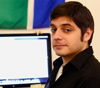
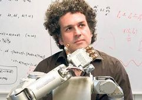
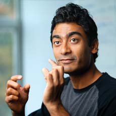
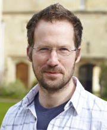

RSS 2016 Workshop:
Summary
This workshop brings together researchers from robotics, computer vision, computer graphics, machine learning, and AI, to discuss fundamental questions in robot perception: how should a robot represent the world? How can we design the best possible representation for a specific task? How can we unify geometric reconstruction and semantic mapping? Robotic perception has been so far dominated by mapping algorithms that build primitive geometric representations of the environment like occupancy grids, meshes, or point clouds. While the community has made great progress in making 3D reconstruction work in real world problems, current algorithms and representations are still unable to capture high-level structure in the environment. Existing mapping algorithms do not take into account the physics of the scene (e.g., pedestrians in a crowd typically walk on the ground, rather than fly), and decouple scene reconstruction from scene understanding, while a unified approach would be largely beneficial (e.g., identifying objects helps reasoning about their relations). The use of more expressive representations would impact many open problems including map compressions for long term navigation, robust data association, human robot interaction, and object manipulation. This workshop aims to bring forward the latest breakthroughs and cutting edge research on robot perception and map representations, and identify challenges and future research directions for the community.
Workshop structure: We seek to answer these questions by identifying current key issues related to representation in robotics, and bringing researchers from other communities working on related topics such as scene understanding and representation itself that can provide tools to address those issues. Therefore, we plan to have invited speakers from two distinct groups: representation users and representation providers (see illustration below). Representation users are roboticists working on topics that could greatly benefit from more useful environment representations, like robotic navigation, manipulation, artificial intelligence, autonomous driving, or large-scale mapping. In turn, representation providers are researchers from fields such as computer vision, computational geometry and computer graphics, or machine learning.

Join our discussions on our G+ community: The Problem of Mobile Sensors: Representations, Physics, and Scene Understanding for Robotics
Keynotes
| Dieter Fox, University of Washington Learning Intuitive Physics Models for Robots The predominant approach to robot manipulation and related tasks is to use physics-based shape and interaction models of the robot, the environment, and the objects therein. While such models are well suited for trajectory planning and reasoning about the forces necessary to achieve certain goals, they require many quantities to be estimated from perceptual data, such as the location and mass of objects, surface frictions, and accurate 3D shape. People, on the other hand, have an intuitive understanding of how things evolve over time and how to achieve certain changes. While this intuitive understanding might not be as accurate as computer-based physics models, it is fully grounded in a person's perceptual experience and therefore well suited for closed-loop control. In this talk I will discuss some thoughts and preliminary results on the challenges and possible benefits of learning and using intuitive physics models for robots. |
|
|  | George Konidaris, Duke University What Are Representations For? The question of the appropriate representations that will support intelligent behavior for robots (for manipulation, and in general) is a central question to the intelligent robotics enterprise. I will argue that the key question is "what are representations for?", and that by posing the question this way we can find well-supported answers. |
|  | Oliver Brock, TU Berlin „Geometry is dead” Hanif Kara said „Geometry is dead.” He refers to architecture and structural engineering. In architecture (and computer graphics), researchers explore two alternatives to geometry: one with increased representational expressiveness (parametric surfaces) and one with minimalistic expressiveness (points). I think that in robotics we also started with geometry and recently turned to point clouds as an alternative. I will advocate that we should also explore the parametric route. By “parametric” I do not mean super-quadrics or things like that. I mean parametric relationships in the combined space of action and sensor signals. I will argue that these relationships provide the most natural and adequate representations for manipulation actions and very naturally lead to competent robot manipulation and perception. |
| Pieter Abbeel, UCBerkeley End-to-End Deep Learning of Representations for Robotics Deep learning has enabled significant advances in supervised learning problems such as speech recognition and visual recognition. One of the key characteristics of these advances is their end-to-end nature: a deep neural net is trained to map all the way from raw sensory inputs to classification. In this talk I will highlight some recent results in end-to-end learning of representations with direct applications in robotics: state estimation, visuomotor policies for manipulation and for flight, and inverse optimal control. |
|
|  | Ashutosh Saxena, Cornell University and Stanford University |
| John Laird (presenting joint work with Aaron Mininger), University of Michigan Integrating a Cognitive Architecture with Real-world Perception A common pattern for perception in a robotic cognitive system is for a perceptual component to do its processing and produce a world state as input to a component responsible for the high-level reasoning, planning, and decision-making. This black-box approach to perception makes it difficult for the agent to handle errors or noise in its input, or to use its knowledge about the world to aid perception. In this work, we explore endowing a symbolic cognitive architecture (Soar) with a continuous spatial memory, so that an agent implemented in Soar can deliberately reason over perceptual updates and unifying them with an internal self-maintained world representation. During this unification, the agent brings to bear information from disparate sources including action knowledge, procedural knowledge, environmental regularities, and human interaction. Through experiments in a real-world robotic domain we show how the agent is robust to environmental noise and perceptual errors while tracking objects as it interacts with them, and how more knowledge available to the agent leads to better performance. |
|
|  | Ingmar Posner, University of Oxford Learning Representations for State Estimation and Perception Situational awareness is a pivotal prerequisite for mobile autonomy. Traditionally, this is achieved by separately tackling the problem of object detection and tracking. This talk will motivate and describe Deep Tracking, an end-to-end approach to object tracking which directly maps from raw, partially occluded 2D laser sensor input to an un-occluded occupancy grid representation. I will describe the underpinnings of the original Deep Tracking approach as well as a more recent extension to apply it in complex, real-world environments. In addition I will also demonstrate how learning an underlying state representation allows for extension to another, related task by leveraging inductive transfer. Here this leads to a data efficient way of achieving effective semantic classification of objects in the scene via multi-task learning. |
Papers Presented at the Workshop
- Helen Oleynikova, Alex Millane, Zachary Taylor, Enric Galceran, Juan Nieto, and Roland Siegwart:
Signed Distance Fields: A Natural Representation for Both Mapping and Planning - Lina María Paz, Tarlan Suleymanov, Pedro Piniés, Geoff Hester, and Paul Newman:
On-line Scene Understanding for Closed Loop Control - Michael Tanner, Pedro Piniés, Lina María Paz, and Paul Newman:
Keep Geometry in Context: Using Contextual Priors for Very-Large-Scale 3D Dense Reconstructions - Tomasz Piotr Kucner, Martin Magnusson, Erik Schaffernicht, Victor Hernandez Bennetts, and Achim J. Lilienthal:
Tell me about dynamics! Mapping velocity fields from sparse samples with Semi-Wrapped Gaussian Mixture Models - Marcin Dymczyk, Igor Gilitschenski, Roland Siegwart, and Elena Stumm:
Map Summarization for Tractable Lifelong Mapping - Kevin Eckenhoff, Liam Paull, and Guoquan Huang:
Decoupled, Consistent Node Removal and Edge Sparsification for Graph-based SLAM - Benjamin Burchfiel and George Konidaris:
Generalized 3D Object Representation using Bayesian Eigenobjects - Md. Alimoor Reza and Jana Košecká:
Reinforcement Learning for Semantic Segmentation in Indoor Scenes - Lawson L.S. Wong:
Object-based World Modeling for Mobile-Manipulation Robots - Karthik Desingh, Mehran Maghoumi, Odest Chadwicke Jenkins, Joseph J. LaViola, and Lionel Reveret:
Object Manipulation in Cluttered Scenes Informed by Physics and Sketching - John Oberlin and Stefanie Tellex:
Time-Lapse Light Field Photography With a 7 DoF Arm
Program
The morning session focuses on representation users, while the afternoon session focuses on representation providers (as defined above).
| Time | Activity |
| 9:00 - 9:05 | Welcome and introduction |
| 9:05 - 9:35 | Keynote #1 - Dieter Fox |
| 9:35 - 10:05 | Keynote #2 - Ingmar Posner |
| 10:05 - 10:30 | COFFEE BREAK |
| 10:30 - 11:00 | Poster Spotlights |
| 11:00 - 11:30 | Keynote #3 - George Konidaris |
| 11:30 - 12:00 | Keynote #4 - Ashutosh Saxena |
| 12:00 - 12:15 | Morning Wrap-up |
| 12:15 - 2:00 | LUNCH |
| 2:00 - 2:30 | Keynote #5 - John Laird |
| 2:30 - 3:00 | Keynote #6 - Oliver Brock |
| 3:00 - 3:30 | Poster Session |
| 3:30 - 4:00 | COFFEE BREAK |
| 4:00 - 4:30 | Keynote #7 - Pieter Abbeel |
| 4:30 - 5:30 | Panel Discussion. Guest moderator: Edwin Olson |
Call for Contributions
Please make your submission, before April 29 2016, at: https://cmt3.research.microsoft.com/RSSWGB2016
We are soliciting extended abstracts/full papers describing novel work in robot representations. Submitted papers will be reviewed by the program committee. Accepted submissions will give a short spotlight talk and present their work in poster format.
Submissions should conform to standard RSS formatting, up to 6 pages excluding references. Accepted papers will be published on the workshop website.
Suitable topics include, but are not limited to:
- New environment and map representations
- Map summarization / map compression for long-term navigation
- Scene understanding
- Task-oriented environment modeling
- Object recognition for manipulation and interaction
- Semantic localization and mapping
- Continuous or alternative map and trajectory representations
Important Dates
Submission Due: April 15, 2016 April 29, 2016
Acceptance Notification: May 20, 2016 May 23, 2016
Camera-ready Papers Due: June 3, 2016
Workshop: June 19, 2016
Program Committee
Jason Stack, ONR Program Manager
John McDonald, Maynooth University
Yasir Latif, The University of Adelaide
Jeff Walls, University of Michigan
Alejandro Rituerto, The Smith-Kettlewell Eye Research Institute
Andreas Geiger, Max Planck Institute
Sunando Sengupta, Vicon Motion Capture Systems
Pedro Piniés, University of Oxford
Lina M. Paz, University of Oxford
Elena Stumm, ETH Zurich
Contact
Enric Galceran, ETH Zurich Email: enricg@ethz.ch Web
Luca Carlone, MIT Email: lcarlone@mit.edu Web
Gian Diego Tipaldi, University of Freiburg Email: tipaldi@cs.uni-freiburg.de Web
Liam Paull, MIT Email: lpaull@csail.mit.edu Web
Andrea Censi, MIT Email: censi@mit.edu Web
Cesar Cadena, ETH Zurich Email: cesarc@ethz.ch Web